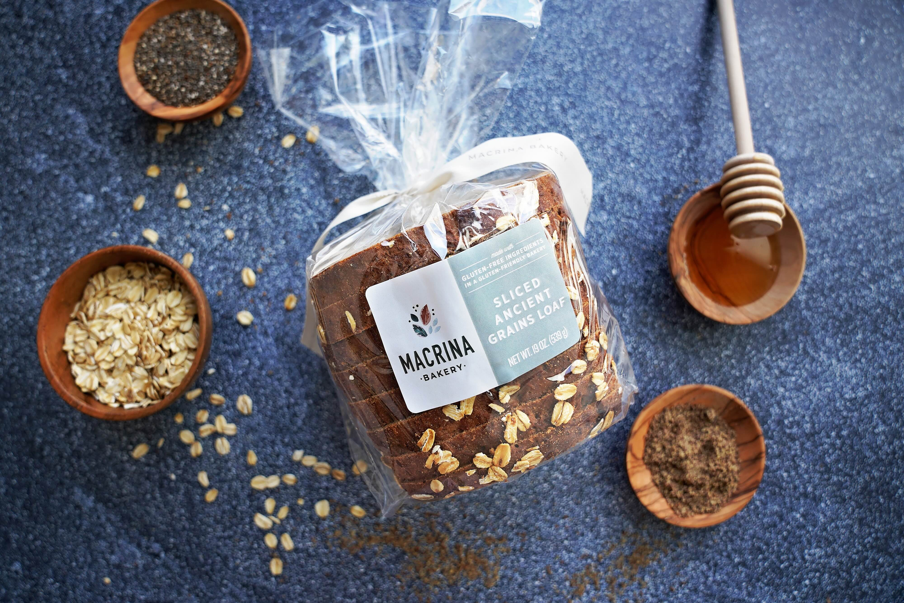
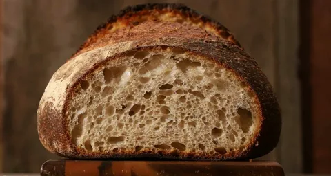
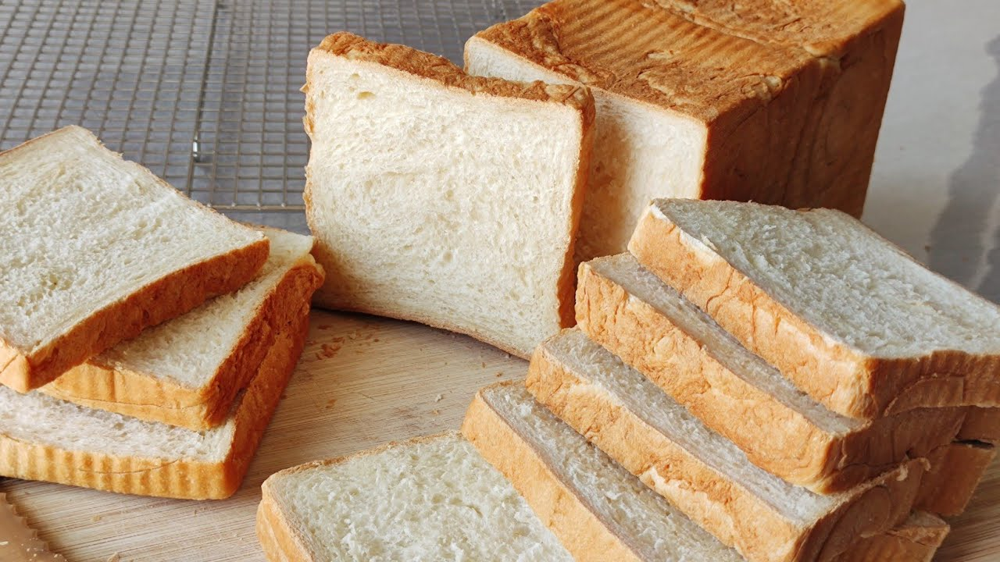
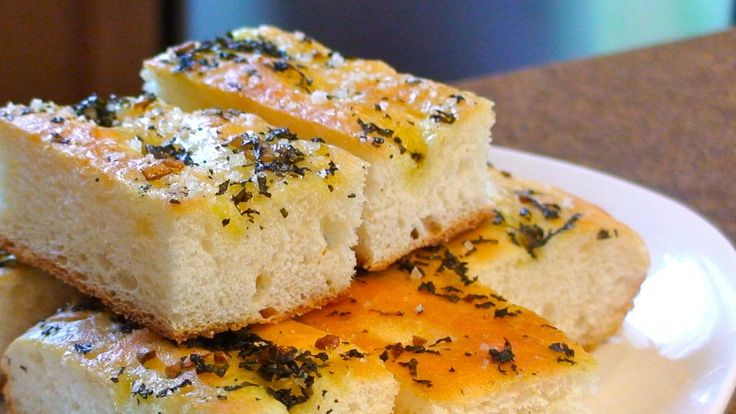
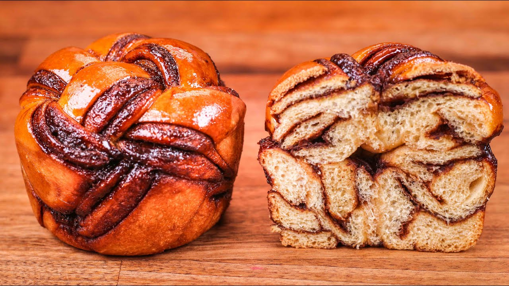
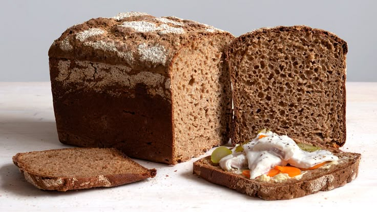

Tested, perfected, and shared with love — from classic boules to discard crackers and sweet bakes.

Crusty, open crumb, deeply flavorful — the quintessential sourdough loaf.

Tender, pillowy, perfect for toast and sandwiches — no commercial yeast.

Airy, dimpled perfection topped with roasted garlic and fresh rosemary.

Rich brioche-like dough swirled with dark chocolate ganache.

Earthy and robust, with a dense crumb and deeply caramelized crust.
Soft, pliable, and ready in a fraction of the time. Perfect for dipping.
Slow-roasted garlic folded into a high-hydration dough with fresh rosemary and cracked black pepper. The aroma alone is worth the bake.
Never throw away discard again — turn it into deliciousness.
Fluffy, tangy, perfect weekend breakfast
Crispy outside, tender inside
Blueberry, chocolate chip, or savory
Ready in 45 minutes
Have a sourdough creation you're proud of? Submit your recipe for a chance to be featured in our monthly newsletter and on our blog.